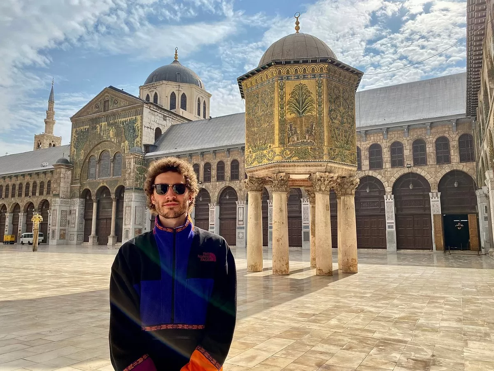
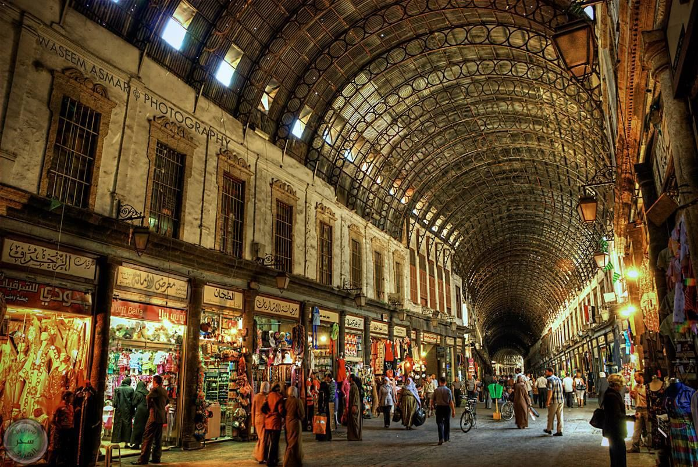
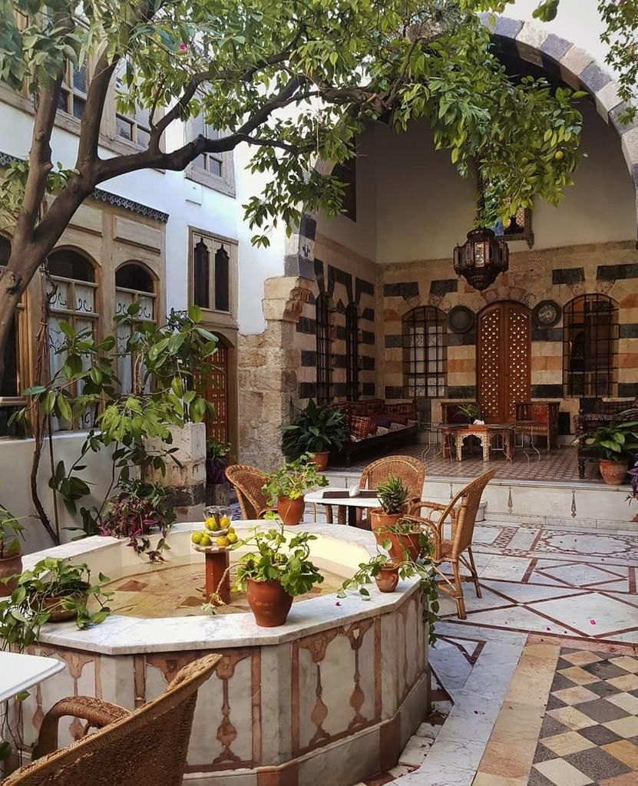
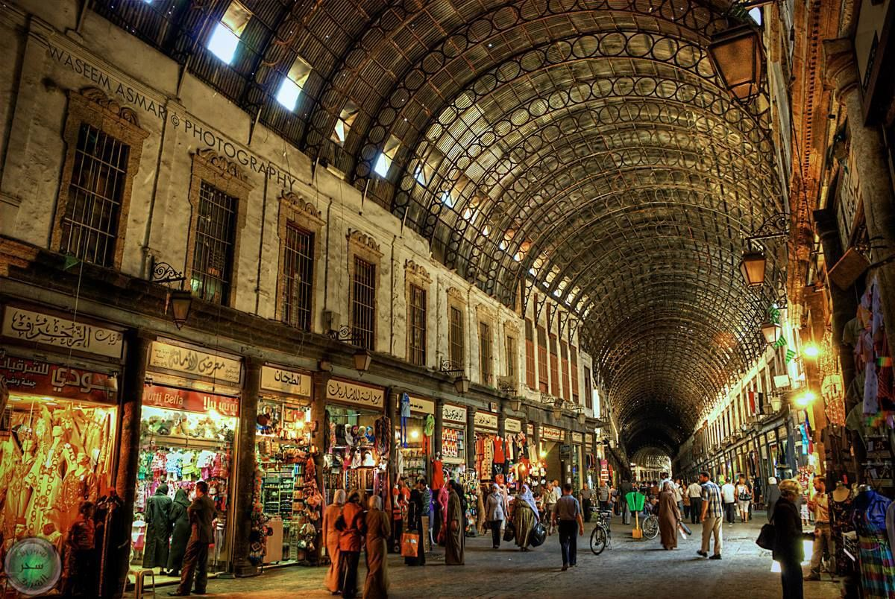
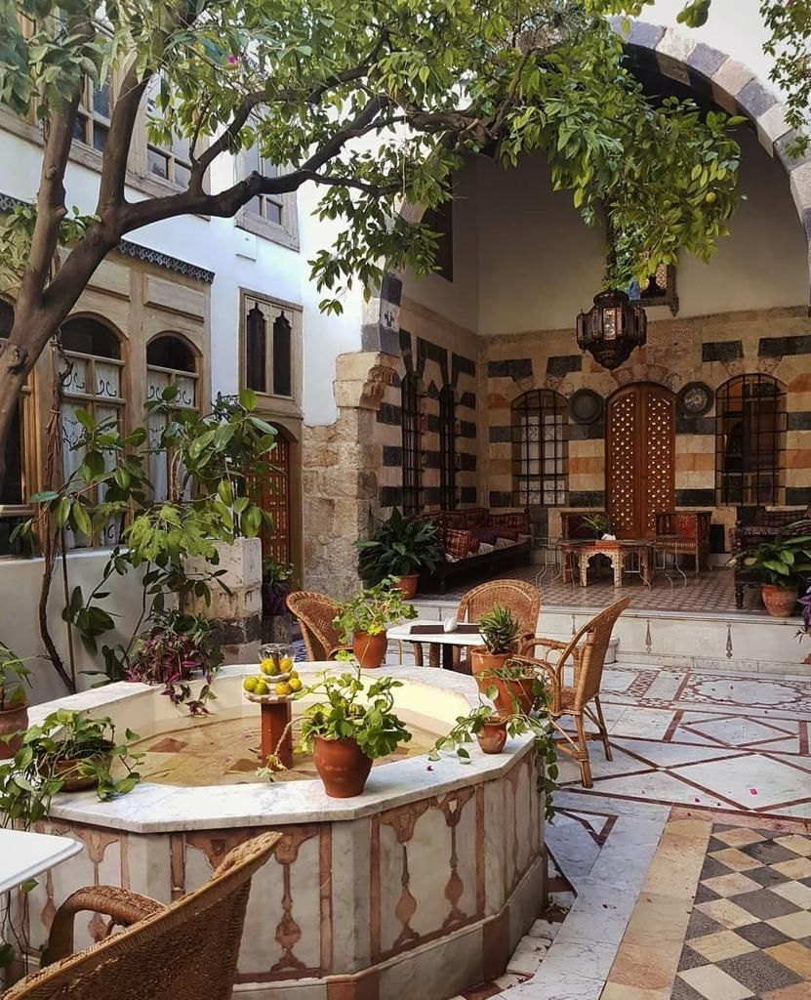

Omajjadenmoskee
 



De Omajjadenmoskee (ook bekend als de Grote Moskee van Damascus) is een van de belangrijkste en meest indrukwekkende religieuze bouwwerken ter wereld. Het is niet alleen een meesterwerk van vroege islamitische architectuur, maar staat ook symbool voor de rijke, gelaagde geschiedenis van Damascus.
Belangrijkste feiten over de Omajjadenmoskee:
- Bouwperiode: De moskee werd gebouwd tussen 706 en 715 na Christus in opdracht van kalief Al-Walid I van de Omajjaden-dynastie, toen Damascus de hoofdstad van het Arabische Rijk was.
- Historische Laag: De locatie is een heilige plek die al duizenden jaren als gebedshuis wordt gebruikt.
- Tijdens de Romeinse tijd werd het de Tempel van Jupiter.
- In de 4e eeuw na Christus werd het omgebouwd tot een grote christelijke basiliek, gewijd aan Johannes de Doper.
- Religieus Belang: De moskee herbergt een schrijn dat de relikwieën van Johannes de Doper (profeet Yahya in de Islam) zou bevatten. Dit maakt de moskee een zeldzaam en belangrijk heiligdom voor zowel moslims als christenen.